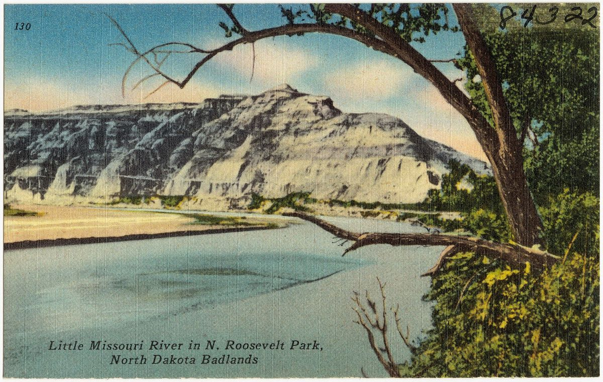

Loading the latest reading…
Live from the U.S. Geological Survey gage
Today's River
Readings come in every 15 minutes from the gage at the Medora bridge, compared with every year on record for the same date.
The last 30 days at Medora
River flow, cubic feet per second. The shaded band is the normal range for each date: the middle half of all years on record.
This year
Normal range (25th–75th percentile)
Median
Along the river
Water reaches Medora from the Marmarth gage upstream, in the state's southwest corner, and passes the Elkhorn on its way to the Watford City gage below the park's North Unit. Not every bend has a gage.
Recent readings are provisional and may be revised by the USGS. In winter, ice can make readings unavailable or estimated. For flood information rely on the National Weather Service; for park roads and trails, Theodore Roosevelt National Park conditions.
Roosevelt's river, measured
Then & Now
No gage stood on the Little Missouri while Roosevelt ranched here from 1883 to 1898; measurements at Medora began in 1903. What survives from his years are his own words. Each chapter sets them beside what the instruments have recorded since.

Then over now
The River Moves
The Little Missouri cuts into one bank and builds onto the other, so its bends drift across the bottoms. Drag the divider to compare an old map or photograph with today's imagery.
Place
Then
Compare
What has been measured, and what hasn't
The Record
The Medora gage has records back to 1903, but not without breaks. Here is exactly which years exist, every yearly peak, and any past year laid over this one.
Which years exist
Solid bars are years with daily flow records. Ticks mark years with only the annual peak on file. Roosevelt's Badlands years come before any measurement.
Every yearly peak at Medora
The highest flow each year, cubic feet per second. Tap a bar for the date and height. Gaps are years with no record.
Tap a bar.
Compare a year
Daily flow through the year on a log scale, so trickles and floods both show. This year is in orange.
Records
Canoe and kayak
Paddle It
Roosevelt and his men took a homemade scow down the Little Missouri in ice. Most paddlers wait for May and June, when snowmelt fills the channel.
Is there enough water?
The National Park Service gauges paddling by the Medora reading:
| At Medora | Boating |
|---|---|
| Under 699 cfs (about 2.5 ft) | Too low. Expect to drag and portage. |
| 699–1,500 cfs (2.5–3.5 ft) | Fair to good |
| Over 1,500 cfs | Above the range NPS lists as good. Fast, cold water; check with rangers. |
Water levels change daily. Easy paddling one day can mean frequent portages the next. Summer thunderstorms can raise the river with little or no warning.
Distances
| Medora bridge to Cottonwood Campground | 3.5 mi |
| Cottonwood Campground to Elkhorn Ranch | 36 mi |
| Medora to Long X Bridge (U.S. 85, North Unit) | 107.5 mi, about 5 days |
| Long X Bridge to Lost Bridge | about 2 days |
Before you go
- A free backcountry permit is required to camp overnight in the national park. Get one at any park visitor center.
- Fences, some electrified, may be strung across the water anywhere along the river.
- There are no reliable sources of drinking water on the river. Carry your own.
- Cell phones may not work, and help can be hours or days away.
- No fires inside the national park. Give bison and horses a wide berth.
Source: National Park Service, Canoeing & Kayaking, Theodore Roosevelt National Park. Confirm current rules with the park before you launch.